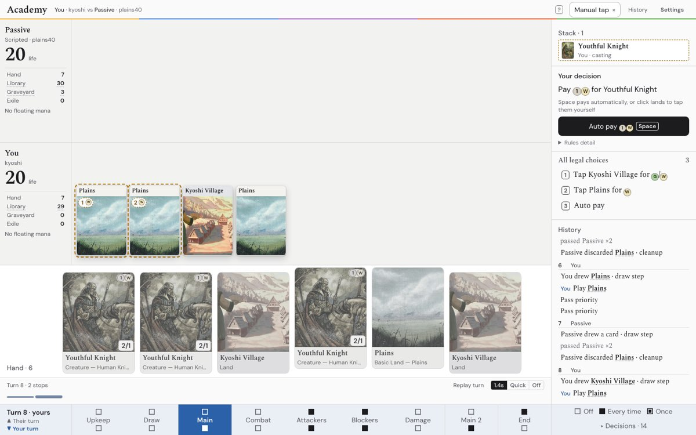
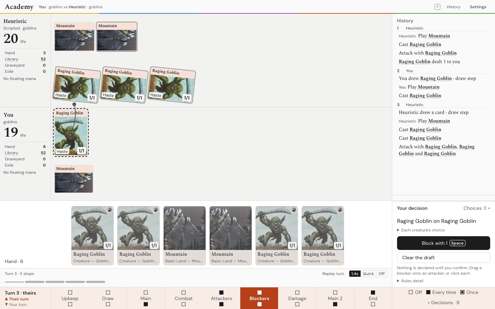
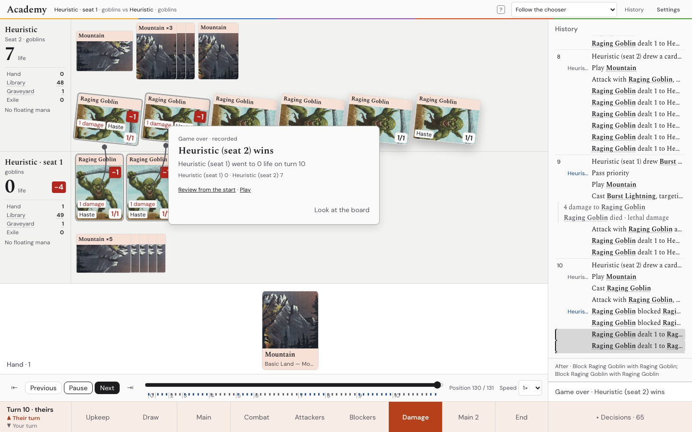

MTG-487 QA
Third pass, at 4c85b7f320. It covers Passes 9–10 and the compress pass: count roles in decision_surface.rs, the autotapper colour tiebreak, and the unified equivalence pass. The release extension and the static SPA were rebuilt from this commit. Academy ran as configured launches (managym academy play / watch) driven with Playwright at 1440×900. The library APIs ran as whole seeded games. No fixes were needed.
| Scenario | Result |
|---|---|
| Two Plains in hand → one “Play Plains”; click the alias copy | works |
| Five Youthful Knights → one cast; click the fifth copy | works |
| Manual payment, Kyoshi Village + 3 Plains at {1}{W}; tap alias, reload, tap alias | 3 offers; Knight resolves |
| Attack drafts of 1, 2, 0, 3 identical goblins naming copies the engine wasn’t asking | exactly 1, 2, 0, 3 attackers |
| Block dragged onto an alias attacker | engine blocks the canonical copy |
| Burst Lightning clicked on an alias goblin | canonical copy dies |
| Cleanup discard from eight identical Plains | no prompt |
| Watch: heuristic v heuristic, goblin mirror | 65 decisions, 23 aliased offers, both seats |
Env.decision / preview / submit: 32 games, 546 attack and 193 block drafts | 0 errors |
| Deprecated compound surface: 3,977 decisions incl. 469 attack, 169 block, 335 waterbend | 0 rejected submissions |
| Repeated candidate labels on the compound surface (367) | all real distinctions |
1 · Hand copies and manual payment works
14 Kyoshi Village / 10 Plains / 16 Youthful Knight against 40 Plains, passive, seed 11, Auto-tap off. Turn 1 offered [Play Plains, Play Kyoshi Village, Pass priority], with Plains on copy 16 and aliases 21 and 19. Clicking 19 sent offer 0, and a Plains entered. Later, five Knights in hand were one Cast Youthful Knight (aliases 41, 33, 34, 27); clicking 27 sent offer 0.
The payment stopped at Tap Kyoshi Village for {G}/{W}, Tap Plains for {W} (subject 82, aliases 84, 85) and Pay the cost. Clicking 85 tapped 82. After a page reload the Plains offer moved to 84 with alias 85; clicking 85 tapped 84 and the Knight resolved. Nothing was rejected.


2 · Attack drafts works
22 Mountain / 30 Raging Goblin / 8 Burst Lightning against 60 Plains, passive, seed 5, Auto-tap on. Each draft clicked copies other than the one being asked, then confirmed with one decision_group_command. From the recorded canonical_replay.decisions:
draft 1 (clicked 127) 129 attack · 127 no · 124 no → 1 attacker draft 2 (clicked 127,124) 129 attack · 127 attack · 124 no → 2 draft 0 133 no · 129 no (rest pruned) → 0 draft 3 (clicked 129,127,124) 133 · 129 · 127 attack · 124 no → 3
The opponent’s life went 20 → 19 → 17.

3 · Blocks and targets works
Goblins mirrored against heuristic, --order draw, seed 5. The block stop offered Block … (choice 127, target 132, aliases [130]), Block … (target 124) and do not block. Dragging blocker 127 onto alias 130 drafted “Raging Goblin on Raging Goblin”, and the plan named attacker 130. The engine’s blocked event names 132, the canonical copy, and both goblins died.
The block line ends on the leftmost attacker. That is the drafted one: alignCombatRows moves a blocked attacker’s pile to the front of its row.

Burst Lightning: the target offer on 124 listed aliases 130 and 148. Clicking 148 sent that offer. 124 left the battlefield, and 130 and 148 remain.

4 · Discard and Watch works
60 Plains against 60 Plains, passive, seed 3, passing every priority. On turn 2 the hand went from eight cards to seven and the graveyard from zero to one, with no discard prompt.
managym academy watch --player heuristic --player heuristic with the goblin mirror, seed 5, played to “Game over · Heuristic (seat 2) wins” with no divergence text. Its recording holds 65 decisions from both seats, and 23 of their frames carry offers with aliases.

5 · Library decision APIs works
Seeded games between token-heavy decks, eight seeds each: goblins v goblins, Dragon Fodder/Geyser Leaper/Bolt v goblins, the same deck mirrored, and Kyoshi v Plains.
Env.decision/preview/submit: random single choices. Attack drafts took the last declarable copies so plans named creatures the engine was not asking, and block drafts used a random subset of blockers. Result: 32 games, 4,836 decisions, 546 attack drafts (735 attackers planned), 193 block drafts and 2,507 offers with aliases. Every preview and submit was accepted.- Compound surface (
compound_offers→RaggedPolicyDecoder→step_structured, deprecated for 0.3.0): 32 games, 3,977 decisions, including 469 attacker, 169 blocker and 335 waterbend count-role decisions. No submission was rejected.
The compound surface showed 367 candidate rows whose labels repeat. Each sampled kind is a real distinction, not a missed fold:
- Haste goblins: one had been under its controller since an earlier turn and the others had not. They differ in summoning sickness (CR 302.6), which haste hides from the observation. The sequential target prompt splits them the same way.
- Geyser Leapers in a waterbend payment: one is the creature activating the ability, and the payment names it.
- Goblin tokens in a later waterbend: one was the target of a Lightning Bolt on the stack.
Not reached
- The autotapper colour/output tiebreak has no visible Academy surface beyond Auto pay, which every scenario above used. The plan’s oracle covers its rules equivalence.
- Engine Budget adoption is still a gate/CI step, as the plan says.